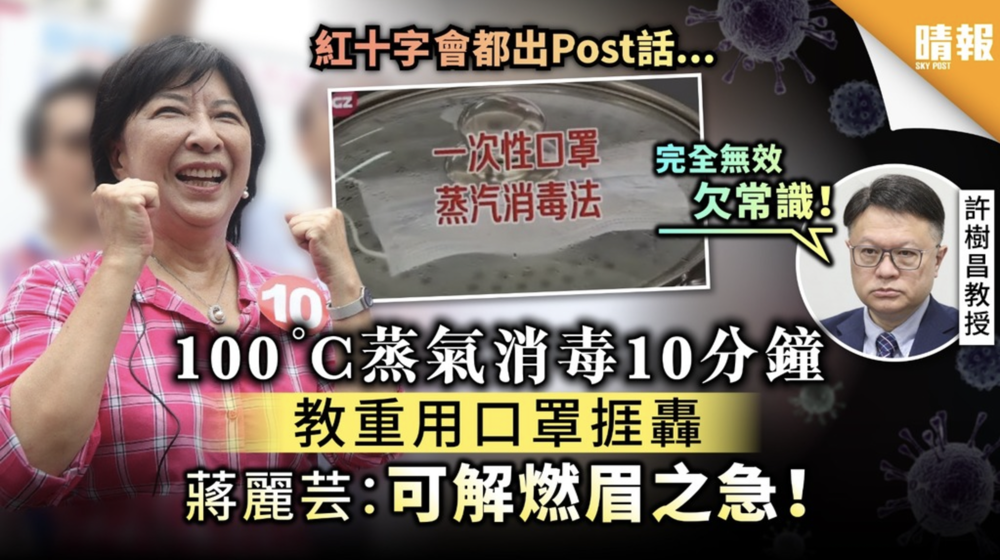
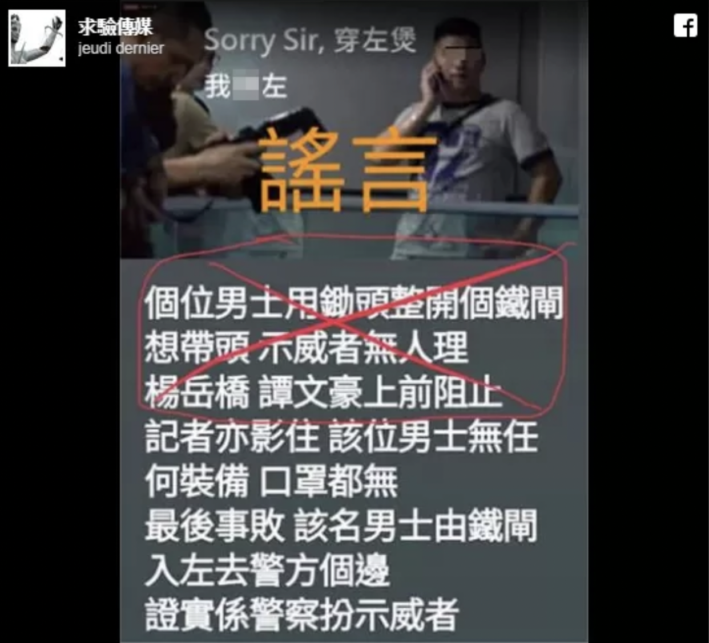
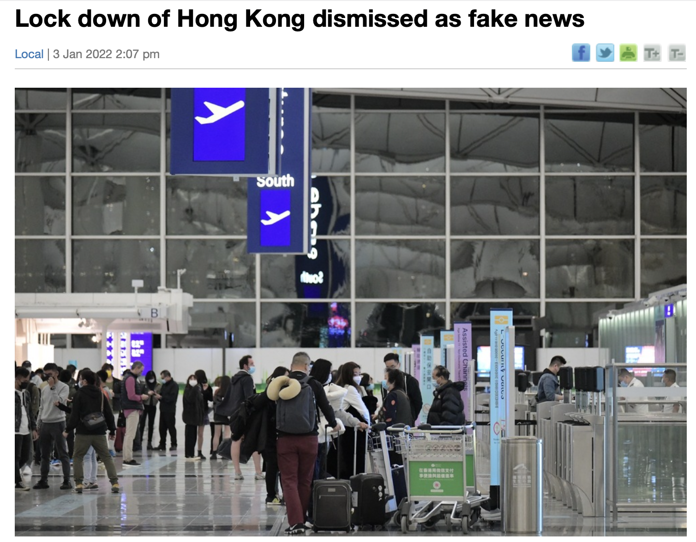

Have you ever read a fake
news? What kind of features of fake news will you notice when you first
saw it?
Have you ever read a fake
news? What kind of features of fake news will you notice when you first
saw it?
Have you ever read a fake
news? What kind of features of fake news will you notice when you first
saw it?
In this page, we will first show you the features of fake news then analyze the consequences of believing fake news and what challenges will fake news bring to the media industry by looking through some exapmle of fake news that have been spread in Hong Kong.

While the COVID-19 pandemic caused a shortage of masks in Hong Kong in early 2020, one of the members of the Legislative Council, Chiang Lai-wan encouraged mask steam sterilization format to improve the lack of masks in Hong Kong. The mask steam sterilization format has proved to be wrong by different professionals and TV shows.
Fake new features in this case: Exaggerate text, photos and content: It uses exaggerated content and decorations to attract the reader’s attention and to raise the reader’s interest towards the fake news.

During the Anti-Extradition Law Amendment Bill Movement, the rumour of police pretending to be one of the protesters was widely spread among the protester through social media such as Instagram, WhatsApp and Telegram. It was proved to be disinformation which the rumour has no actual videos and photos support.
Fake new features in this case: It is always related to the news of the year which most people cared about:It attracts more readers to read the fake news even if they do not believe it or not. It helps the news gain more attention with more views.

The rumour of having a lockdown of Hong Kong went viral among Whatsapp and other online social platforms. It is said that the Chief Executive Carrie Lam Cheng Yuet-Ngor and Secretary for Food and Health Sophia Chan Siu-chee would hold a press conference on Monday to announce locking down Hong Kong.
Fake new features in this case: Claim as published by professional/ according to professional: The verification claimed by a professional can make the information more believable to the public as they do not have much knowledge about it or they are not professional in these areas.
1. The credibility of news will be judged by readers
It might reduce their interest in reading news or rely more on international news media instead of local media
Over-relying on visuals and algorithms to attract readers might cause misunderstanding if readers do not actually read the content of the news.
3. Different kinds of misunderstood information or rumours will be spread
Rumours will damage the credibility of the government, mislead wrong information to the public or even harm one's reputation.